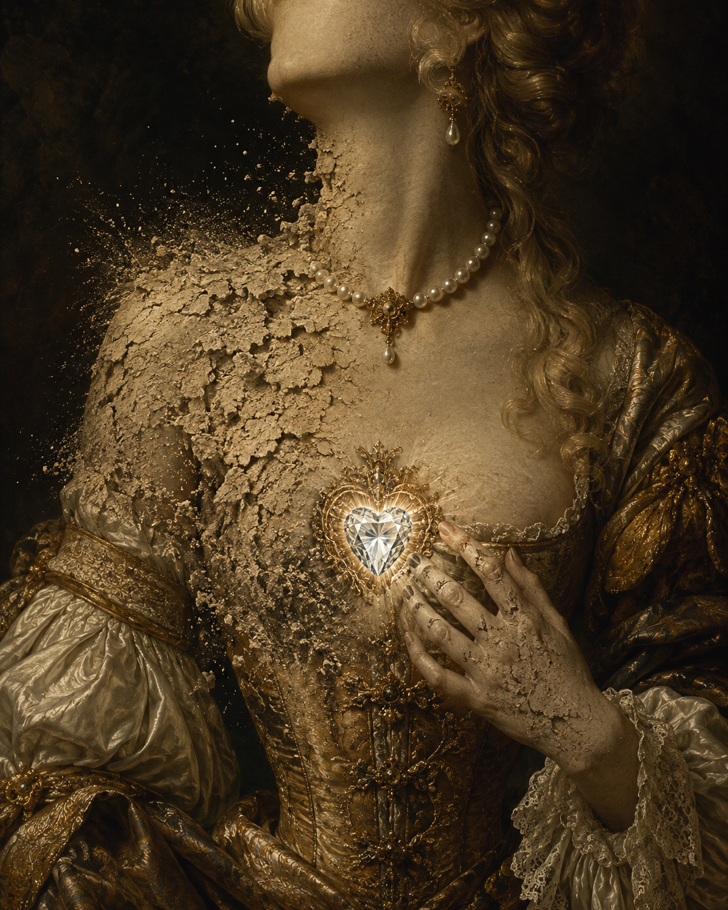

Es wird der bleiche Tod mit seiner kalten Hand / Dir endlich mit der Zeit um deine Brüste streichen,
全诗的策略：把 vanitas（虚空）的抽象命题"逐器官具体化"。开篇即"苍白的死神终会抚摸你的双乳"——不是泛泛说"美会消逝"，而是一一列举身体的部位（乳房、唇、肩、眼、手、发、足、举止）。这种肉身的、近乎情色的铺陈，是"华丽风格"（Schwulst）的特征。
美之易逝
《Herrn von Hoffmannswaldau und andrer Deutschen auserlesener … Gedichte Erster Theil》（Neukirch, 1695）· 第二西里西亚派 / 华丽风格
巴洛克（第二西里西亚派 / 华丽诗风） · Barock (Zweite Schlesische Schule / galante Dichtung)
约17世纪中期作；生前未刊，1695年由 Benjamin Neukirch 编入《Herrn von Hoffmannswaldau und andrer Deutschen … Gedichte》第一卷（系年待核）

图片由 AI 生成
Es wird der bleiche Tod mit seiner kalten Hand / Dir endlich mit der Zeit um deine Brüste streichen,
全诗的策略：把 vanitas（虚空）的抽象命题"逐器官具体化"。开篇即"苍白的死神终会抚摸你的双乳"——不是泛泛说"美会消逝"，而是一一列举身体的部位（乳房、唇、肩、眼、手、发、足、举止）。这种肉身的、近乎情色的铺陈，是"华丽风格"（Schwulst）的特征。
Der liebliche Korall der Lippen wird verbleichen;
verbleichen（变苍白、褪色）——嘴唇被比作珊瑚（Korall），珊瑚的红色将褪。注意与 verwesen（腐烂）的区分：verbleichen 指颜色褪去，verwesen 指有机体腐败（参见词汇表 verwesen/der Verweser 同形异义）。
Der Schultern warmer Schnee wird werden kalter Sand,
双肩的"温暖的雪"将变成"冰冷的沙"——雪（白皙肌肤）变沙（粗糙）。每组器官都给一个"由美到丑"的转化。
Das Haar, das itzund kann des Goldes Glanz erreichen,
itzund（此刻、如今）是 itzt 的巴洛克扩展形（= jetzt，见17世纪正字法表）。头发此刻能匹及黄金的光泽，终将被时间抹去。
Denn opfert keiner mehr der Gottheit deiner Pracht.
转折（Volta）前的逻辑：一旦美消逝，再没有人向"你的华美的神灵"（der Gottheit deiner Pracht，即把美人的美貌比作值得献祭的神）献祭。美即神圣——而它会衰败。
Dein Herz kann allein zu aller Zeit bestehen, / Dieweil es die Natur aus Diamant gemacht.
末两行格言式收束（与《致自己》编号32 末两行同类手法）：唯独心能万古长存，因为自然用钻石造了它。整首十四行的肉身铺陈在此被一个反转收束——美会消逝，但"心"（内在的、不可见的）是钻石做的。这是巴洛克"虚空"中留出的唯一救赎。
本诗中未标注需要特别说明的不规则动词变位。
全诗 4+4+3+3 行，韵式 abba abba ccd eed，亚历山大体（六音步抑扬格 + 第6音节后 Zäsur）
原刊（Neukirch 1695）vs 现代通行文本的系统性差异
bleiche Tod … kalten Hand … liebliche Korall … warmer Schnee … süßer Blitz …
克里斯蒂安·霍夫曼·冯·霍夫曼斯瓦尔道（1616—1679）是德语巴洛克"第二西里西亚派"的代表，与格吕菲乌斯（本站编号30、31）齐名。但二人路数相反：格吕菲乌斯写战争与虚空的严肃宗教诗，霍夫曼斯瓦尔道写"华丽风格"（galante Dichtung / Schwulst）——肉体的、修辞铺陈的、近乎情色的诗。
《美之易逝》是他的代表作。它生前未刊，1695年由其侄 Benjamin Neukirch 编入《霍夫曼斯瓦尔道及其他德语诗人诗选》第一卷。这首十四行把 vanitas（虚空）的抽象命题"逐器官具体化"：死会抚摸乳房、唇（珊瑚）会褪色、肩（雪）会变沙、眼（闪电）、手、发（金）、足、举止——每一项身体之美都被给一个"由美到丑"的转化。末两行反转：唯独心（Herz）是钻石做的，能万古长存。
本诗与本站《一切都是虚空》（编号30）是巴洛克 vanitas 的两极：一首抽象罗列（城/草/铜/石），一首肉身铺陈（乳/唇/肩/眼）——没有后者，巴洛克的图像是残缺的。它也是全站亚历山大体十四行的第三个样本（《致自己》《祖国之泪》之外），三首同体而异题。
中文译文为本站学习译文（AI 辅助），采用直译。说明：(1) 正文采用现代化正字法通行文本，原刊（Neukirch 1695）小写名词 + Virgel（/）代逗号的形态在17世纪正字法表与校对记录中完整给出；(2) "逐器官具体化"的修辞译文保留（双乳/唇之珊瑚/肩之雪/眼之闪电）；(3) 末两行的格言式收束（"唯独心是钻石做的"）译文保留其反转语气。本诗与本站《一切都是虚空》（编号30）是巴洛克 vanitas 的两极，建议对照。
【正字法与版本处理原则】本站正文采用现代化正字法的通行文本（面向学习者）；原刊（Neukirch 1695）的小写名词 + Virgel（/）+ 旧拼法形态在17世纪正字法表与本记录中完整给出。
【三源核对】原刊正字法以 Zeno.org 转写的 Neukirch 选集1961年影印再版（S.46–47）为一级来源（本页的现代化正文以 gedichte7 的全现代化读法为底本，原刊形态据 Zeno）。另两个独立来源：deutschelyrik.de（二级，部分保留旧拼法的混合文本）、gedichte7.de（三级，全现代化）。14 行、分节 4/4/3/3、韵式 abba abba ccd eed——一致；差异仅在现代化程度（deutschelyrik 部分保留 / gedichte7 全现代 / Zeno 原刊）。
【原刊 vs 现代 系统性差异】(1) 名词大小写：原刊小写（tod/hand/zeit/corall/lippen/sand/augen/haar/glanz/tag/jahr/band/fuß/staub/gottheit/pracht/hertze/natur/diamant），现代大写。(2) 拼写：umb→um、corall→Korall、kräffte→Kräfte、itzund→itzund（保留，lexical）、glantz→Glanz、süsser→süßer、theils→teils、Diß→Dies、hertze→Herz、kan→kann、diamant→Diamant。(3) 标点：原刊用 Virgel（/）代诗行内停顿（streichen/、blitz/ die kräffte、fällt/ die werden、Das haar/ das itzund、fuß/ die lieblichen、staub/ theils nichts），现代改逗号。(4) 题名：原刊"Sonnet. Vergänglichkeit der schönheit"（含 Sonnet 标签、小写 s），现代"Vergänglichkeit der Schönheit"（大写 S、去 Sonnet 标签）。
【待进一步核实】(1) 系年（约17世纪中期作，具体年份与首刊情境待核）；(2) Neukirch 1695 选集的编纂细节；(3) 1695年原版的逐字排印（本次据1961 Niemeyer 影印再版 + 三个现代转写，未直接核1695原版）；(4) 本诗的中译情况。
【公版】Hoffmannswaldau 1679年卒，公版起始年 = 1679 + 71 = 1750。
本诗现满足规则 A（≥3 来源）、B（≥3 独立运营方：zeno / deutschelyrik / possel）、D（含一级来源：Zeno Neukirch 影印本 S.46–47）。